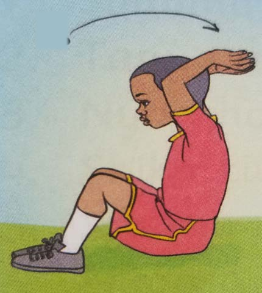
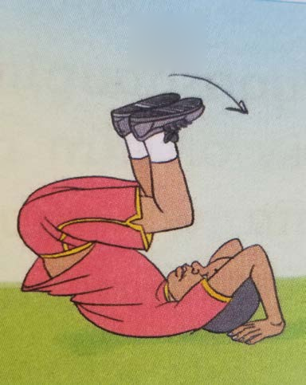
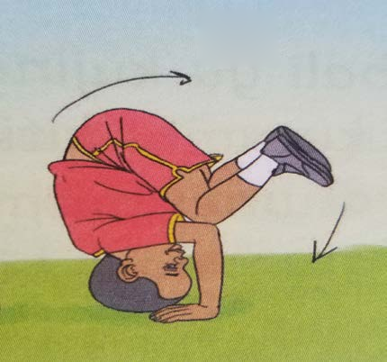
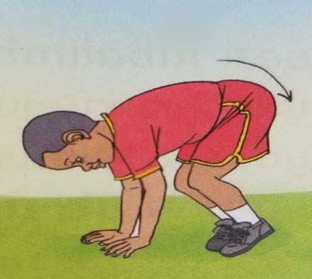

How to perform a backward somersault
Steps for backward somersault.
1. Sit down and place your hands behind your back.
2. Lie on your back and lift your legs up.


3. Push yourself backward.
4. Land by placing your feet forward.


5. Lower your waist and hips gracefully.